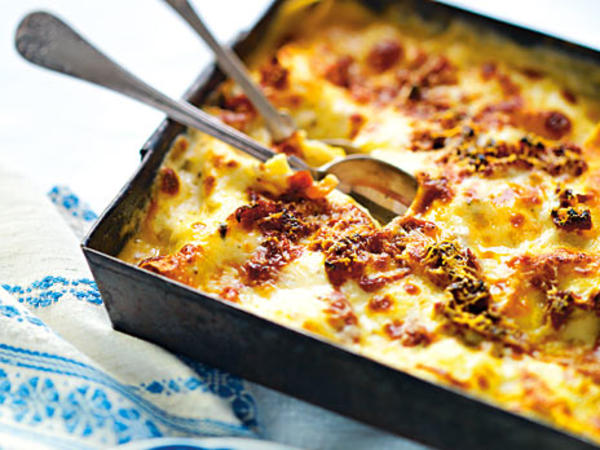
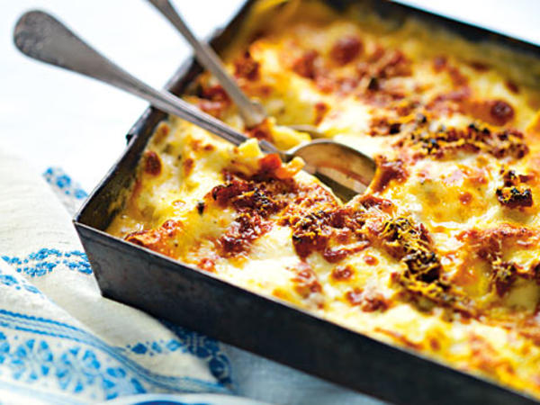

4 portioner
Såhär gör du:
Burgare:
Blanda ihop salt och peppar med färsen. Forma till fyra burgare och stek dem på båda sidor i smör och olja.
Chilimajonnäs:
Rör ihop alla ingredienserna.
Stek baconen i smör och lägg på en bit hushållspapper.
Stek brödskivorna i smör på båda sidorna. Stek äggen.
Lägg bröden på tallrikar, lägg på sallad, paprika, burgare, ägg rödlök, salsa, bacon och majonnäs. Strö över chiliflakes och flingsalt. Lägg på de sista bröden.
Servering: Servera burgarna med lite extra salsa och chilimajonnäs.
4 portioner
Såhär gör du:
Sätt ugnen på 225°.
Skala och hacka lök och vitlök. Fräs dem mjuka i smör i en stekpanna. Lägg i köttfärsen och stek den under omrörning så att den smular sig.
Tillsätt krossade tomater, tomatpuré, oregano, peppar och buljongtärning. Låt såsen koka ca 5 min.
Vispa ut mjölet i hälften av mjölken i en kastrull. Häll i resten av mjölken och låt det koka upp under
vispning. Låt såsen koka ca 3 min.
Rör ner 2 1/2 dl av osten och smaksätt med salt.
Varva köttfärssås, ostsås och lasagneplattor i en smord ugnssäker form. Avsluta med sås. Strö över resten av osten. Grädda i nedre delen av ugnen ca 30 min.